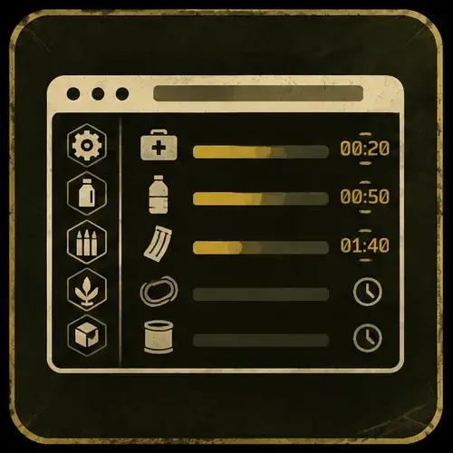
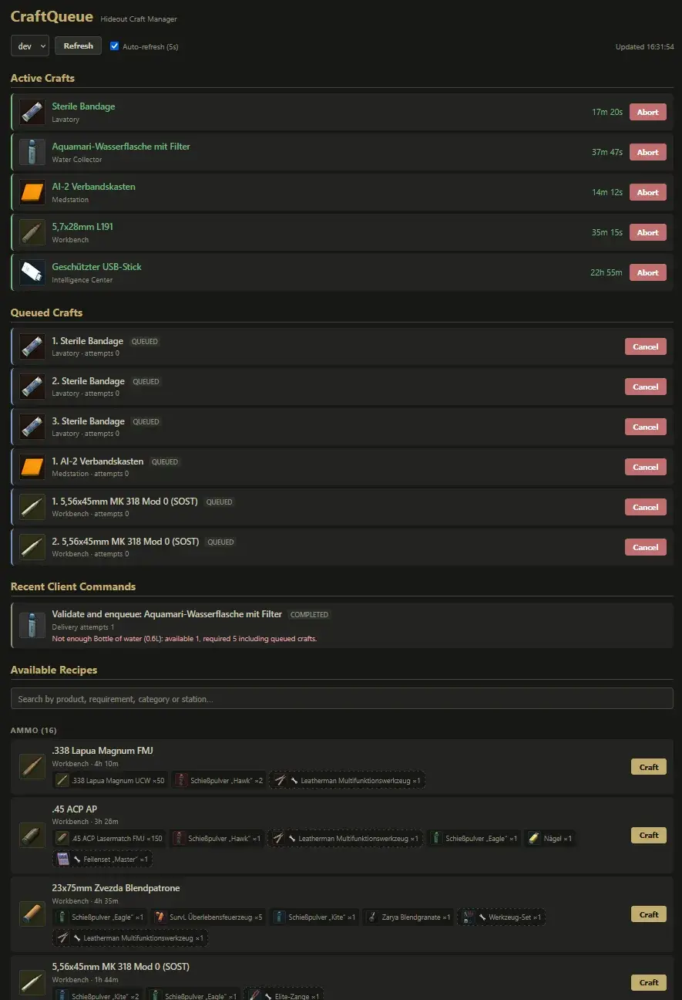

CraftQueue
- Downloads
- 224
- Favourites
- 7
- Mod lists
- 5
CraftQueue moves hideout crafting into one local web page. Queue as many crafts as you like per station - each station works through its list on its own, all stations in parallel.
What it does
- Auto-chains your crafts: finished items are collected automatically and the next craft starts by itself - even during raids, where the server takes over the queue and hands everything back cleanly when you extract.
- One live overview of every running craft: names, icons, remaining time, and a paused marker when your generator is off. Works while EFT is loading, in a menu, or closed.
- Full recipe browser with search by product, ingredient, category or station - only showing what your profile has actually unlocked.
- Safe cancelling: aborting a craft returns its tools to your stash (vanilla would destroy them). Ingredients stay consumed, like in vanilla.
- Nothing starts “for free”: entries are validated against your real stash (FIR, tools, pinned items, consumables already reserved by the queue) and simply wait if materials go missing.
- Queue survives server restarts; anything ambiguous becomes a visible Needs Review entry instead of a silent duplicate or loss.
Why not fully server-side?
Outside a raid EFT works on an interactive cached copy of your stash - if the server consumed items behind its back, client and profile would drift apart: “item not found” errors, in the worst case a corrupted profile. Hard-reserving materials would be the same kind of invented transaction, stranding items whenever it gets interrupted. So CraftQueue only uses the game’s real transactions: outside raids your own client starts and collects crafts, and the server takes over exactly while EFT has unloaded the stash during a raid. Materials are reserved logically - queued crafts count against your stash, and if something goes missing the entry simply waits and retries.
Usage
- Install both parts from the archive (
BepInEx+SPTfolders into your SPT installation). - Start the server and EFT, then press F9 in game - your personal page opens in the browser. (Rebindable; the link is also printed in the logs.)
Runs on the server machine, reachable over LAN by default - handy when EFT and the server are separate machines. Every player gets a personal link that only sees their own profile; the host link in the server console manages all profiles.
Notes
- Fika-compatible: each player manages only their own queue via their personal link.
- Compatible with Hideout In Progress (hip) - completely separate domains.
- Not compatible with Hideout Automation’s production stacking: that is a second craft-queue system fighting over the same starts and collections; at minimum disable its production stacking, better run only one of the two.
- Continuous productions (water collector, bitcoin farm), scav case and cultist circle are not queued.
- Outside raids the queue advances while EFT is running; crafts finishing with EFT closed are collected at the next start.

Version
1.1.0
- Added: Collapsible groups
- Added: Alternative grouping by station
- Added: Real-time material availability check
- Added: Command dismissal
Version
1.0.0
Initial Release